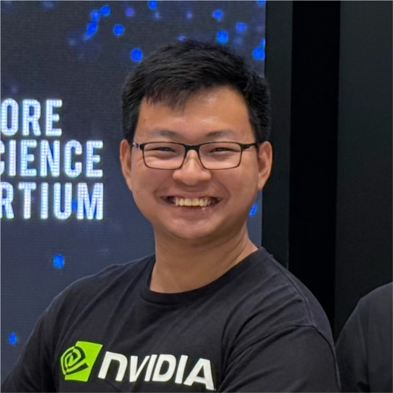

Applied AI Programmes
Partner discovery, scoping, prototypes, research translation, and roadmaps.
Applied AI | Ecosystem Development | PhD in NLP
Solutions Architect, NVIDIA AI Technology Centre (NVAITC)

I help shape applied AI programmes, prototypes, and roadmaps with academic, government, and industry partners. My work spans foundation models, multimodal AI, agents, accelerated computing, and open models. I did my PhD at SUTD, focused on paraphrasing, semantic similarity, dataset reliability, and sentence-pair classification for NLP generation, classification, and testing.
Partner discovery, scoping, prototypes, research translation, and roadmaps.
Generative AI, vision-language systems, synthetic data, and model adaptation.
GPU workflows, containers, distributed training, Kubernetes, and HPC.
Workshops, mentoring, student supervision, and ecosystem building.
Support applied AI collaborations across Singapore, Thailand, Indonesia, Vietnam, and Australia.
Awarded Formation Promising NSman of the Year and invited to the Presidential Garden Reception 2026.
Researched multimodal foundation models and long-form image captioning with a Japanese R&D team.
Completed a five-year NVIDIA internship alongside undergraduate and postgraduate studies.
Liu T. and Soh D.
Joseph R., Liu T., Ng A.B., See S., Rai S.
Huangsuwan K., Liu T., See S., Ng A.B., Vateekul P.
Hongwimol P., Kehasukcharoen P., Laohawarutchai P., Lertvittayakumjorn P., Ng A.B., Lai Z., Liu T., Vateekul P.
Arefeen R., Miao X., Tong R., Ng A.B., See S., Liu T.
Rajendran M., Tan D., Liu T., Ng A.B., Lee J.S., Wei E.Y., See S.
Kukreja D., Prasad K., Anand A., Wang Z., Cambria E., Liu T., Ng A.B., See S., Chatterjee B.
Chan J.Y., Guo H., Liu T., Ng A.B., See S.
President's Graduate Fellowship scholar. Thesis: Foundations and Applications of Paraphrasing in NLP.
Information Systems Technology and Design, with cybersecurity research and student workshops.
Gold Award for modelling medical-shock financial vulnerability with XGBoost and Tableau.
Finalist at YITU Singapore AI Hackathon; winner at Google “Fake News Must Die” and Red Hack.
Featured project for Prowler, a Raspberry Pi cluster network vulnerability scanner.
Mentor at AI Saturdays Singapore and co-lead for Intel Make Tomorrow Catalyst workshops.
Multimodal Generative AI, Agentic AI Systems, NLP, Deep Learning
Python, SQL, Bash, HTML/CSS/JavaScript, Java
PyTorch, TensorFlow, HuggingFace Transformers, DeepSpeed, vLLM, SpaCy, NumPy, SciPy, OpenCV, XGBoost, Dask
Linux/Unix, Git, Docker, Kubernetes, AWS, GCP, Azure, PBS, Slurm
Codex, Claude Code, AWS Kiro, Cursor
English and Mandarin Chinese
Apple Silicon telemetry CLI for CPU, GPU, ANE, memory, and power.
GPU-enabled AI development container for rapid prototyping and JupyterHub.
TensorFlow Metal experiments and model benchmarks on Apple Silicon.
CNN/LSTM experiments for five-class emotion classification of short text.
Raspberry Pi cluster-based distributed network vulnerability scanner.
CPU benchmark notebooks comparing Apple Silicon across numerical and NLP workloads.
A personal aircraft-spotting logbook and aviation photography field guide, with an interactive world map, aircraft index, squadron records, airshow collections, and spotting statistics.